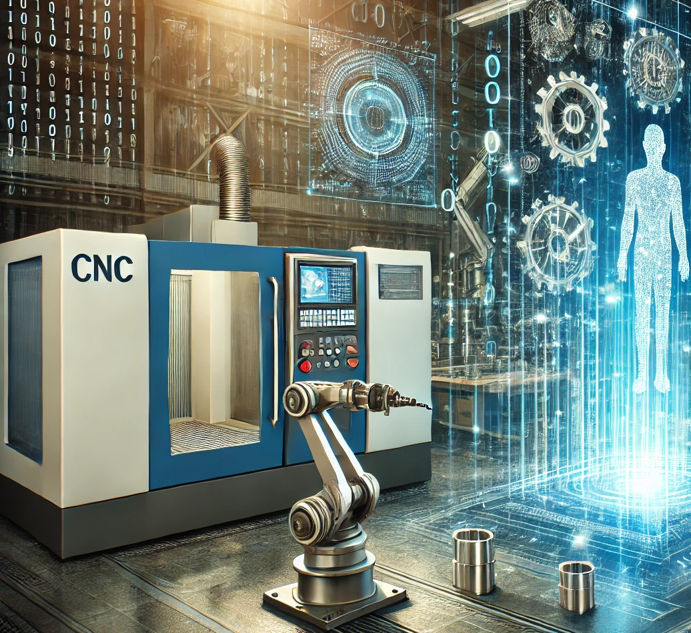

Case Study · Digital Transformation · Fluid Systems
Overcoming automation challenges through digital transformation
“Once we started working with Mr. IIoT, it felt like we had a hired gun.”— Automation Engineer

The situation
An Automation Engineer at a global leader in industrial fluid-system manufacturing was tasked with driving the company's digital transformation initiatives. Their journey toward digital manufacturing was well underway, but the team needed a partner capable of delivering more than just standard hardware and software — a partner with genuine Industry 4.0 expertise and a customized approach.
The challenge
“Digital manufacturing is a new initiative for us,” the Automation Engineer explains, noting that finding the right partner had been challenging. While many companies offered generic solutions, the team required a partner who understood their unique needs. A key issue was ensuring seamless communication and data flow between their existing systems and FANUC control systems, with a preference for open-source, flexible tools.
The solution
The team discovered Mr. IIoT on GitHub, drawn to their open-source work and reputation for practical, integrative solutions. Mr. IIoT helped integrate a FANUC data collector adapter — an open-source solution designed by Mr. IIoT — that enabled the company's systems to communicate directly with FANUC controls, providing the seamless interoperability crucial to their goals.
“They're experts who are here to help us solve a problem, not just to sell a product.”— Automation Engineer
The result
The collaboration exceeded expectations. “There wasn't a single issue or technical challenge we encountered where I felt like they weren't sure what to do,” the Automation Engineer remarks. Mr. IIoT's clear, methodical troubleshooting and deep industry knowledge let the team proceed with confidence, becoming an essential partner for ongoing support and technical insight.
“It was like someone had our back. We finally found true technical expertise that could seamlessly integrate with our own engineering team… They partner well with other organizational IT departments, helping us solve problems, improve processes, and guide us through our digital transformation journey.”— Automation Engineer
Mr. IIoT
Digital Industry 4.0 transformation services — customized business system integration and industrial automation to streamline manufacturing and enhance efficiency.
mriiot.com · (312) 504-0681 · chris@mriiot.com
The takeaway
Open-source FANUC connectivity, built by Mr. IIoT, gave a global manufacturer direct machine-to-system communication — expertise that complemented their own engineers.
Want a partner, not a product pitch?
Bring us your toughest integration. We solve, we don't sell.